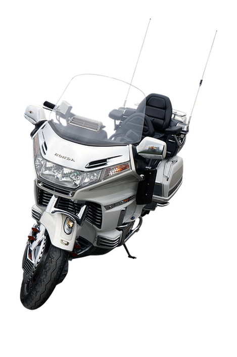
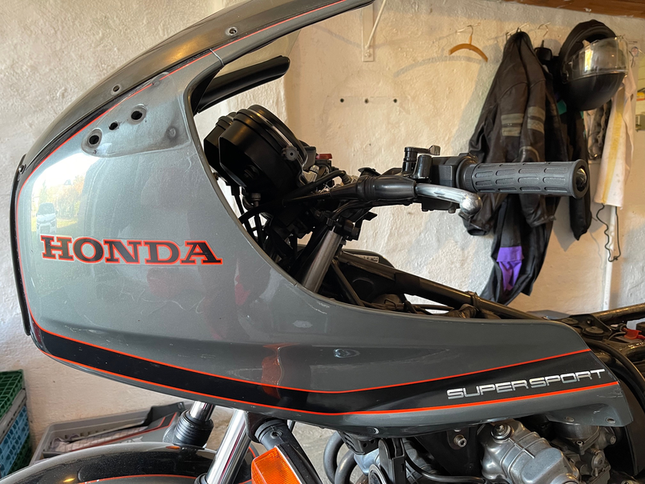
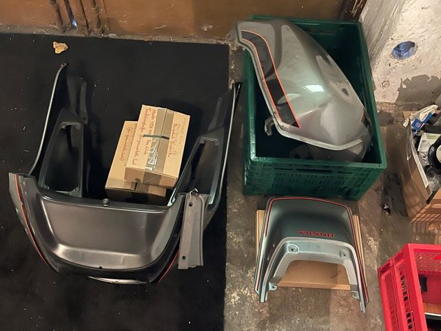
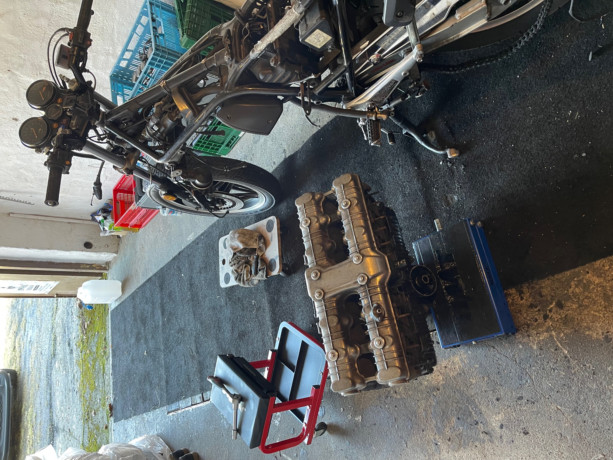
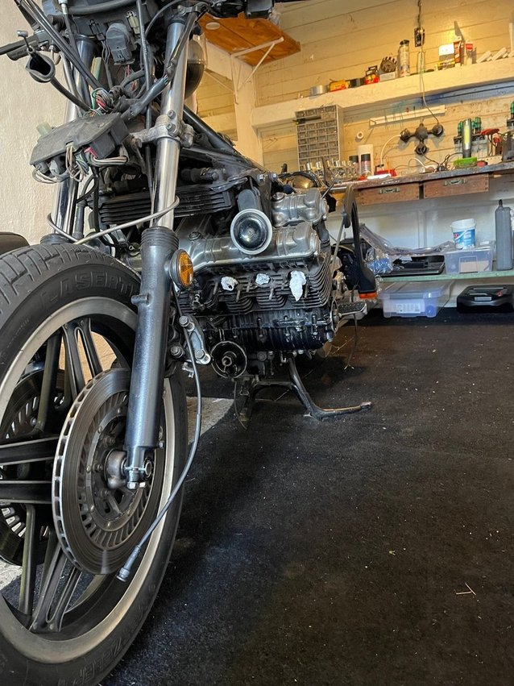
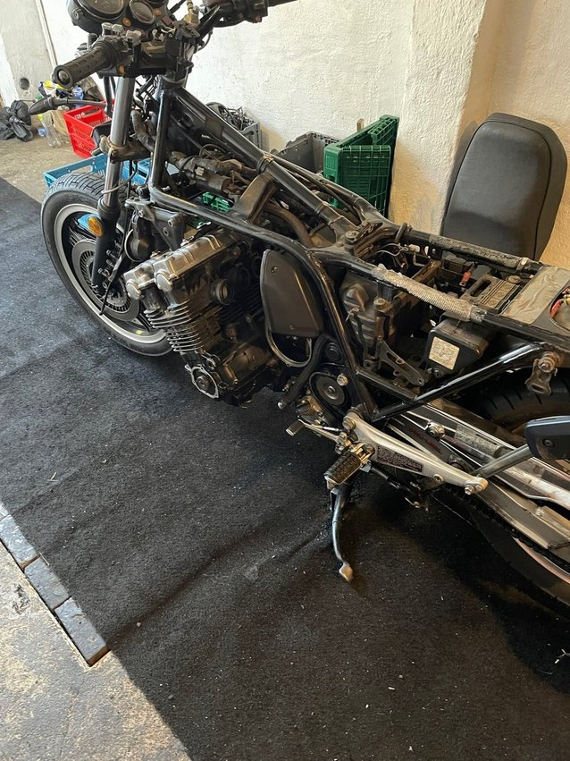

Willkommen auf meiner Mopedseite, ich wünsche Euch viel Spaß beim Stöbern.
Eigentlich probiere ich nur mit HTML und CSS rum
Inhalt:
- Beschreibung
- Lebenslauf (natürlich vom Moped)
- Fotos (natürlich auch nur vom Moped)
Nö, das ist sie natürlich nicht, auf ein rollendes Wohnzimmer hatte ich nie Bock!

TADAA, Das ist sie!
Beschreibung: Mein Motorrad ist eine Honda CBX mit dem internen Modellcode SC06 und dem Zulassungsdatum
August 1984.
Sie hat 1050 qcm verteilt auf 6 Zylinder und 100 PS. Fahrfertig wiegt sie ca. 300 kg. Inklusive Fahrer kommen
wir also auf ein Leistungsgewicht von 4 kg/PS.
Mit ihren 5 Gängen soll sie auf eine Höchstgeschwindigkeit von 205 km/h kommen, naja?! Der Motor ist
luftgekühlt und jeder Zylinder hat seinen eigenen Vergaser. Der Motor ist mit seinem stabilen Aufbau ein
Teil des Fahrwerkes. Die Federung des Hinterrades ist mit einem zentralen Federbein
nebst Umlenkhebelsystem ausgestattet. Dieses "ProLink-System" gibt dem Motorrad auch seine
Modellbezeichnung. "Honda CBX ProLink"
Der Farbton nennt sich "Silbergraumetallic" und ist mit dem typischen "Honda-Rot" und Schwarz in den
Zierstreifen abgesetzt.
Der Lebenslauf des Motorrades beginnt für mich erst im Jahr 2008. Davor stand sie lange Zeit abgemeldet in
einer Garage.
Es benötigte schon einige Anstrengungen sie nach dieser langen Standzeit wieder zum Leben zu erwecken.
Da ich am Anfang meines Berufslebens einige Zeit als Motorradmechaniker gearbeitet habe, war es dann doch
keine so große Schwierigkeit.
Mit dem Kilometerstand von ca. 34.500 km starteten ich und meine "Dicke" unsere gemeinsame Zeit.
Viele schöne Touren und Reisen habe ich ohne größere Blessuren genossen. Der schnurrende Sechszylinder hat
auch viele Passanten begeistert.
Bei 61.000 km war leider eine Reparatur des Anlasserfreilaufs notwendig.
Dafür musste der Motor geöffnet werden, der Freilauf liegt leider auf einer Getriebewelle im Inneren des
Motors (blauer Pfeil). Das dies nicht ohne eine ordentliche Werkstatt zu erledigen war versteht sich von
selbst
Leider ist damals mit der Abdichtung des Motors etwas schief gegangen, sodass ich den Motor erneut öffnen
muss.
Damit ist auch die Gelegnheit für eine Neulackierung gegeben.
Die Zierstreifen sind glücklicherweise weiterhin bei eBay zu bekommen. Nicht billig, aber Spaß kostet eben!
Den exakten Farbton kann man heutzutage glücklicherweise mit einem Farbmeßgerät ermitteln, ich bleibe
gespannt.
Der Neulack wurde nicht nur aufgrund des Alters notwendig. Zweimal hat jemand meine Dicke auf die Seite
gelegt.
Einmal hat mich ein Autofahrer bei Rückwärtsfahren übersehen und mich vom Sattel geholt.
Ein zweites Mal hat mein Parkplatznachbar beim Einparken den Überblick verloren und die Dicke vom Ständer
geschubst. Ich muss mich immer noch mit dem ^ beruhigendem Video von dem Ärger erholen.
Naja, zweimal das "Kleine Sturzset" sprich Brems- bzw. Kupplungshebel, Blinker, div. Lackschäden an der
Verkleidung und Kratzer an den Rückspiegeln.
Der Auspufftopf, die Motordeckel, die Beinschilde sind ebenfalls beschädigt, ist aber alles noch reparabel
bzw. Ersatz zu bekommen.
Aktuell hat die Dicke 115.000km auf der Uhr und ich hoffe sie wird mir weiterhin viel Freude bereiten.
So war der Zustand im Jahre 2010, ein Schmuckstück!
Aber ich hatte mich dazu entschlossen, die Dicke in Würde und im täglichem Gebrauch altern zu lassen. Leider
waren zweimal andere Verkehrsteilnehmer unaufmerksam.
Aber auch der Zahn der Zeit, das Wetter und die vielen Kilometer haben ihre deutlichen Spuren hinterlassen.
Aktuell ist sie in Reparatur bzw. beim Lackieren. Ich bin gespannt auf das Ergebnis.
Bleibt dran, es wird spannend!


Es geht ihr an den Kragen.......................................diese Garage ist jetzt meine neue
Werkstatt!

Der Patient ist vorbereitet....................und Action
Das "Geburtsdatum" des Motors...........die Schaltgabeln sind noch fein!


Die Montage erfolgt in umgekehrter Reihenfolge. Ohje, wie ich diesen Satz aus den Reparaturanleitungen
hasse!
Sie läuft wieder, etwas unrund, aber nach einer Warmfahrt mit anschließender Synchronisation der Vergaser
wird es besser sein.
Sie sieht in diesem Zustand etwas zerfleddert aus. Die wahre Schönheit wird erst erstrahlen wenn die
neulackierten Teile wieder montiert sind.